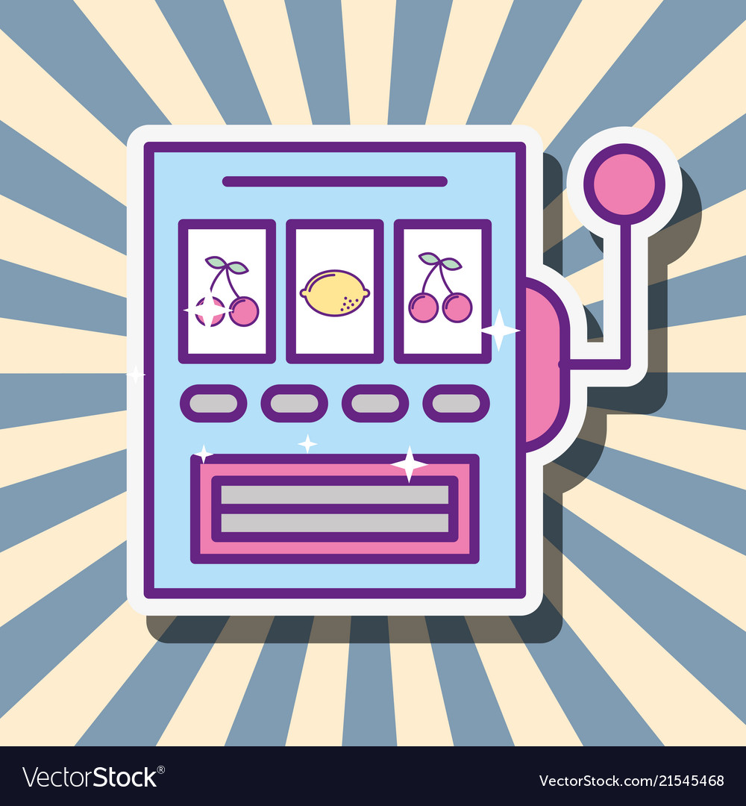
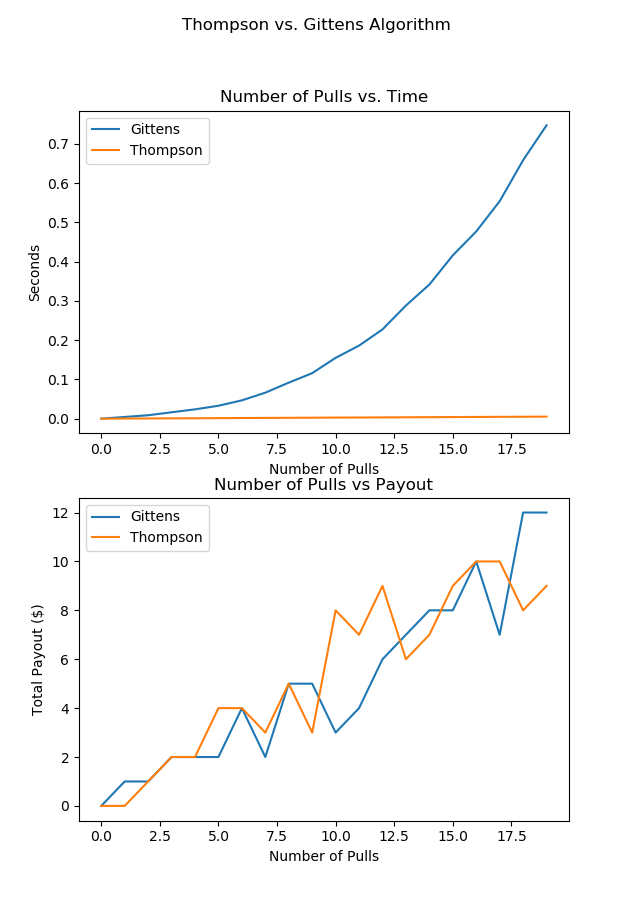

Why Thompson Sampling Is Better Than A/B Testing
Eric RiddochApril 28, 2019
What Is Thompson Sampling?
With a heaping wad of cash in hand, you stand in front of a row of slot machines wondering which one has the highest win rate. This is called the “multi-armed bandit problem”. (A slot machine is a one-armed bandit, so really it should be called the “multiple one-armed bandits problem”). Thompson Sampling is the algorithm that will most optimally get you to the best slot machine.
Besides gambling, two other applications of Thompson Sampling are advertising and medicine. You might be wondering which version of your website out of many has the highest conversion rate, or which cancer drug has the lowest rate of rejection by the human body. These questions can both be framed as multi-armed bandit problems.
Slot machines are called "bandits" because they rob people. Given any number of bandits, Thompson Sampling seeks to find the one with the highest expected payout.
The Pitfalls of A/B Testing
Many companies approach the advertising question posed above with a very naïve approach. If we have three versions of our advertisement, why don’t we host all three versions for one week? And at the end, we’ll see which version got the most clicks.
This is called A/B testing. A/B Testing is a basic, controlled experiment where all product versions are distributed equally to users.
Question: But what if two of my three website versions are awful?
Depending on our specific implementation of A/B testing, we would be exposing the bad websites to two thirds of our users. That means the majority of our customer base is getting a second-rate product for some period. With this process, advertising companies may spend months hosting the worst versions of their ad before A/B testing allows them to change course.
Note, another criticism of A/B testing is that it is difficult to perform when there are many variants to be tested. With limited time or resources, it may simply be infeasible to test each version equally.
In recent years, Thompson Sampling has gained a lot of popularity in industry for “solving” the A/B test problem using fewer resources than A/B testing. Rather than administering all variants equally, Thompson sampling intelligently chooses to investigate one branch at a time.
This figure compares Thompson Sampling to one of its rivals, the Gittens Algorithm. "Number of Pulls" refers to the the total number of decisions and updates over the life of the problem. Observe that the two algorithms win roughly the same amount, but Thompson is O(1) while Gittens is O(k^n) where k is twice the number of bandits and n is the number of pulls. Python code here
Cat Website Example
Consider our three versions of the cat adoption website above.
Given a cat website you may choose to (1) adopt a cat, or (2) leave. Upon clicking, the algorithm records your response. Then, it performs a Bayesian update on the prior distribution of possible values of the conversion rate for the version with the wet cat.
Let’s walk through it:
Say, you click “sample” and the wet cat version pops up. After seeing it, you are so alarmed that you can’t even imagine having one of these creatures living anywhere near where you sleep. Naturally, you politely click “Not today…” and shudder at the thought of the freakish animal you just escaped.
You will now see the wet cat beta distribution decrease. Click “sample” again. When you do this, the algorithm takes a random sample from each cat website distribution. Then it serves you whichever version corresponds to the largest sample.
Fortunately, since you just rejected that awful wet monster, there is less likelihood that the next picture you will see is the wet cat. It’s still possible, but less likely now.
If—for some unfathomable reason—you clicked “Adopt a Cat” after seeing the wet cat (maybe your hand slipped?), then you would now have the blessing of seeing it more often.
A Potential Downfall of Thompson Sampling
A reason not to use Thompson sampling might if swapping out test branches more than once is infeasible. For example, say you wanted to know which billboard ad on a highway side is most effective. In this case, the cost/effort of swapping out billboard variations is significant.
Here, you could consider switching ads more infrequently (maybe wait a week or a month at a time). All the data you collect between decision points simply give you more information about where the true value of the conversion rate could plausibly lie.